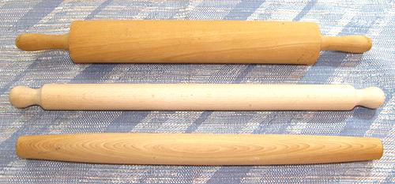
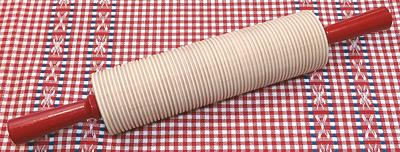

Rolling Pins

Rolling pins are essential for many pastry and pasta tasks, but can
be as simple as a length of broom handle (a little small in diameter
for easy use). Pictured here are the three most used versions. There
are other rollers for special purposes.
French Tapered Pin:
If you have only one
rolling pin, this is the one to have. It is highly controllable and using
it you can easy roll out large regions that are of uniform thickness.
The width of the dough can be wider than the pin is long without
problems. The photo specimen is 20-1/4 inches long and 1-3/4 inches
diameter. I have used it many times and am entirely satisfied with it.
Italian Pasta Pin:
This pin is used by
Italian pasta mommas to roll out dough very, very thin. After getting
your dough as thin as you can the regular way (about 1/32 (0.032) inch
thick) you use this pin. You actually stretch the dough out by the
palms of your hands, parallel to the pin, rolling it up around the the
pin before it has time to spring back (your dough has to slide easily
on the board). You then turn it 45 degrees,
unroll it onto the board, move the pin back in front of you and stretch
again until you dough is practically paper thin. The photo specimen is
22-1/2 inches long and 1.57 inches (4 cm) diameter, but those knobs on
the ends are completely useless and might as well be sawed off. This
type comes in longer lengths, up to about 36 inches.
Common Handled Roller
This rolling pin is
often pictured in old cartoons with a big momma wife holding it by the
handle and using it to beat her diminutive husband for some offence or
another. For sure, It is good for that, and you can roll out pie crusts
and other fairly thick things with it, but it's far from ideal,
relatively difficult to control and tiring to use. The photo specimen,
a ball bearing model, has a roller 15 inches long and 3-5/8 inches
diameter.

Lefse Roller
This rolling pin is used by Norwegians for
rolling out Lefse. Lefse is a fried flatbread made a number of ways in Norway,
including from wheat flour or a mix of wheat flour and potatoes. Norwegians
in the American Midwest usually make it with just potatoes. The photo specimen
is a ball bearing model from Bethany Housewares. The roller is 9-3/4 inches
long and 2-3/4 inches diameter. The grooves are 0.060 inch deep.
More on Kitchen Gear.
ke_rollpin 151209 - www.clovegarden.com
©Andrew Grygus - agryg@clovegaden.com
Photos on
this page not otherwise credited are ©
cg1 -
Linking to and non-commercial use of this page permitted